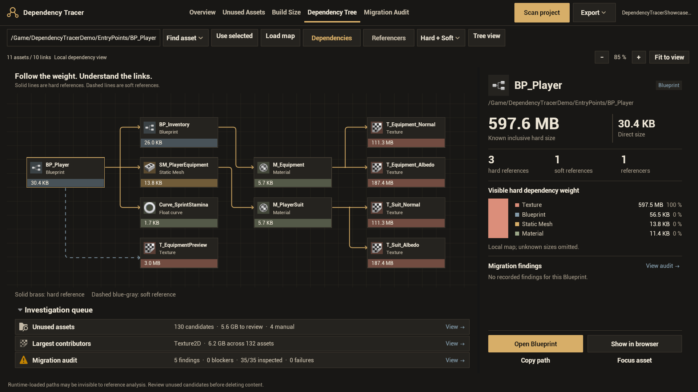
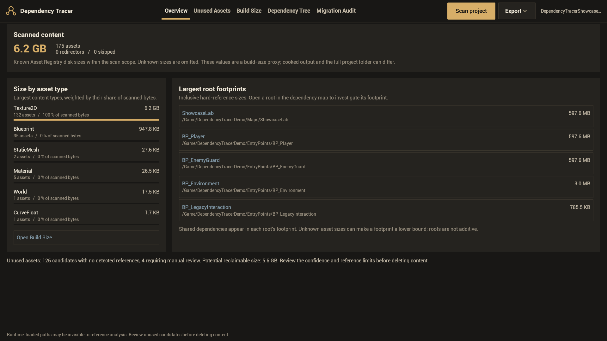
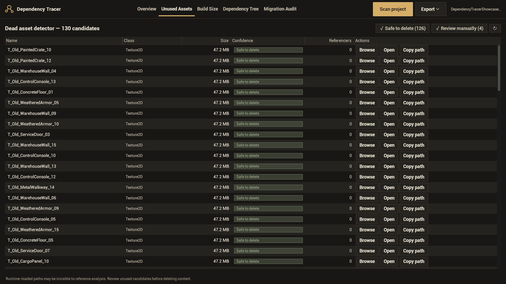
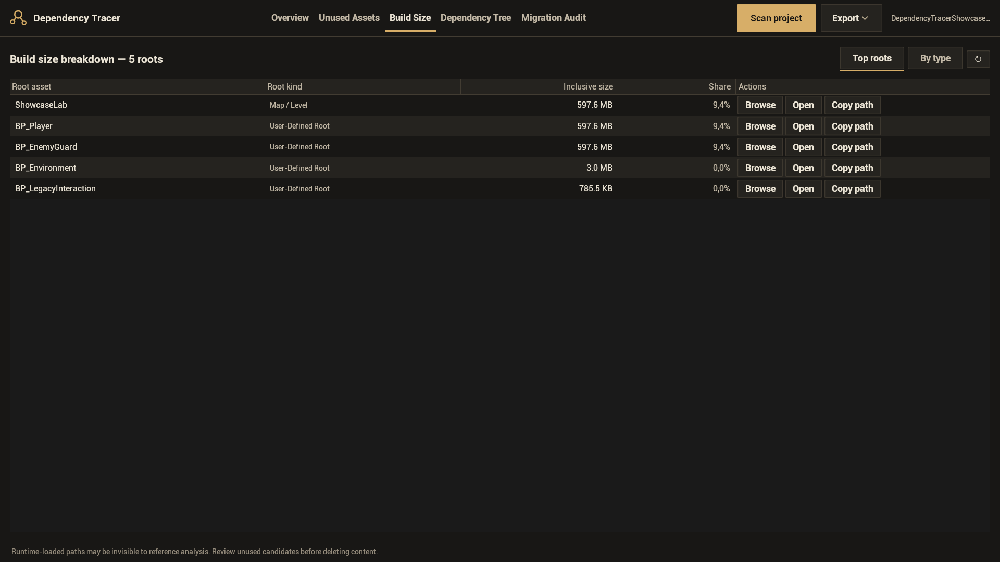
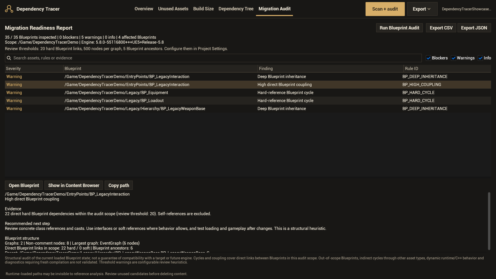

Dependency Tracer 1.1.0 user guide
Follow the weight.
Understand the links.
Find assets that deserve a closer look, see what keeps them connected to your project, and prepare your Blueprint layer for an engine upgrade.

Choose what you need to investigate
Review unused content
Find isolated assets and dependency islands to inspect before cleanup.
Unused AssetsFind the heavy dependencies
Follow a root's footprint to the textures, meshes and other assets behind it.
Build Size and Dependency TreePrepare your Blueprints
Review structural findings with evidence and a recommended next step.
Migration Readiness ReportInstallation
Dependency Tracer 1.1.0 supports Unreal Engine 5.5, 5.6, 5.7 and 5.8 on Windows 64-bit. Install the package for your engine's minor version.
Install through Fab
- Find Dependency Tracer in your Fab Library in the Epic Games Launcher and install it for the matching engine.
- Open your project. In Edit > Plugins, search for Dependency Tracer and enable it if needed.
- Restart the editor, then open Tools > Dependency Tracer.
Manual installation from source
- Close Unreal Editor. Keep one installation of the plugin: an older project copy can take precedence over an engine installation.
- Place the archive's
DependencyTracerfolder inside your project'sPluginsdirectory. The descriptor must be at the path shown below. - A source package requires the C++ build tools supported by your exact engine. Build the project's editor target, or build the plugin with Unreal's
BuildPlugintool before installing it. - Open the project, enable Dependency Tracer if needed, restart, and open Tools > Dependency Tracer.
YourProject/
YourProject.uproject
Plugins/
DependencyTracer/
DependencyTracer.uplugin
Config/
Resources/
Source/Source submission archives and the processed Fab installation are different distribution steps. A manually installed source archive may prompt for compilation; a DLL built for one engine minor version cannot be reused in another.
Your first scan
Begin with a familiar part of your project. Save changed assets first so the on-disk package sizes represent their latest saved state. The workbench initially opens Dependency Tree; switch to Overview after scanning. This guide keeps button labels in English to match the plugin interface.
- Choose the content to scan. Open Project Settings > Plugins > Dependency Tracer. Leave Analysis Roots at
/Gamefor the project, or choose a smaller folder such as/Game/Characters. - Scan your project. Open Tools > Dependency Tracer and click Scan project. Wait for the scan to finish. The optional Blueprint audit runs when you choose Scan + audit or Run Blueprint Audit.
- Start with Overview. Check the scanned asset count, content sizes, asset types and largest root footprints.
- Follow a heavy asset. Open Dependency Tree, choose it with Find asset or select it in the Content Browser and click Use selected. Select cards to inspect their sizes and references.
- Review the candidates. Open Unused Assets. Use Browse and Open to check an asset's purpose before changing it.
- Record the result. Run Migration Audit when preparing an upgrade, then export CSV or JSON for review.
If you change assets or settings, run a new scan. Use Reload map when the map indicates that its snapshot comes from an earlier scan.
Scan scope and roots
Scope is the set of assets to inspect. A root is a starting asset treated as live; assets reachable through its hard or soft references are retained by the unused-content analysis.
- Analysis Roots: content paths included in analysis. The default is
/Game. - Excluded Folders: paths left out of analysis, even when inside an included folder.
- Additional Root Folders: folders whose assets should be considered live, including content loaded dynamically by your game.
- Include Plugin Content / Include Engine Content: optional scope expansion. Both are off by default.
Use Unreal package paths such as /Game/Characters, rather than Windows folder paths. Roots also come from supported map, packaging and asset-management configuration. All maps in scope are treated as roots. If Cook All is enabled in your packaging configuration, all in-scope assets are live and the unused list can be empty.
Additional Root Folders adds preservation roots; it does not widen the scan scope. Include a folder in Analysis Roots as well when you want to fully analyze its content.
The scanner rechecks isolated candidates against the full Asset Registry, including references from outside the chosen scope. This improves confidence, but cannot discover every dynamic runtime reference.
Project Overview
Overview summarizes the latest completed scan. Start here to choose which asset family or root deserves attention.
- Scanned content: known on-disk package sizes in the configured scope, with asset and skipped counts.
- Size by asset type: the largest types, weighted by their share of known scanned bytes.
- Largest root footprints: roots with heavy hard-reference dependency closures.
- Unused summary: candidate count, manual-review count and potential reclaim size. Potential reclaim size sums known sizes of the final Safe to delete candidates.

Unknown package sizes are omitted from known-size totals. These figures represent the scan scope; they are not the size of your complete project folder.
Unused Assets
Review assets not reachable from the detected live roots. Each entry includes its asset type, known direct size, confidence and referencer count.
| Filter | What it means | What to do |
|---|---|---|
| Safe to delete | An isolated candidate with no detected referencers after the registry checks. | Check its purpose and any dynamic use before deleting it with Unreal's normal asset tools. |
| Review manually | The asset needs a closer look, for example because a dependency island references it or its class is protected. | Inspect related assets and loading code. Review a dependency island together. |

Use Browse to locate the asset, Open to inspect it and Copy path to share its package path. Keep Asset Classes prevents selected classes from receiving the Safe to delete classification.
The tab presents a review list and does not automatically delete assets. After manual cleanup, test your affected maps and loading paths, then scan again.
Build Size
Use Top roots to investigate roots with large inclusive hard-reference footprints. Use By type to see which asset types account for the most known package bytes.

| Value | Meaning |
|---|---|
| Direct size | The known saved size of that asset's own package. |
| Inclusive hard size | The root's own package and its reachable hard dependencies, with each package counted once within that footprint. |
| Shared dependencies | The same package can belong to several roots' footprints. Adding those footprints together counts shared assets more than once. |
| Unknown or incomplete size | The reported known value can be a lower bound. A ≥ marker means that the calculation is incomplete. |
Size lookup first uses Asset Registry package sizes and falls back to the saved package file's filesystem size. These sizes are a proxy for build weight. Cooking, compression, target platform and packaging settings can produce a different shipped size. Measure a cooked build when you need its actual delivery size.
Dependency Tree
- Choose a root with Find asset, select an asset in the Content Browser and click Use selected, or enter its package path and click Load map.
- Choose Dependencies to follow assets it references, or Referencers to investigate assets that reference it.
- Filter the map with Hard + Soft, Hard only or Soft only.
- Select a card. Read its direct and inclusive size, reference counters, visible dependency weight and recorded migration findings in the right-hand inspector.
- Use Open Blueprint or Open asset, Show in browser, Copy path and Focus asset to continue your investigation.
Read the lines
Solid brass lines are hard references. Dashed blue-gray lines are soft references. Arrows follow the actual reference direction in both dependencies and referencers views. Dots identify shared forks; a gap in a dashed route at a crossing is not a connection.
Soft references can avoid a direct hard dependency, but assets loaded through them can still be needed at runtime. The displayed inclusive size and weight breakdown concern hard dependencies.
Navigate the map
| Control | Action |
|---|---|
| Mouse wheel / + / − | Zoom the map. |
| Middle or right mouse drag | Pan. |
| Fit to view / Home | Fit the visible map. |
| Left / Right arrow keys | Select another node. |
| Enter / double-click | Focus the selected asset. |
| Tree view / Map view | Switch between the graph and a tree whose branches expand when requested. |
| Reload map | Replace the snapshot after a completed rescan. |
The local map is bounded to 32 nodes, 96 links, depth 3 and 6 children per expansion, plus work limits. Read its status for truncation or omitted links, and focus a different asset to explore further. The depth and children settings apply to Tree view, rather than these map limits. Inspector weight bars describe the visible hard dependencies, rather than every asset in the project.
Migration Audit
The Migration Readiness Report is included in Dependency Tracer 1.1.0. It helps prepare your Blueprint structure before an engine migration.
- Configure the analysis roots and exclusions for the Blueprint layer you want to inspect.
- Open Migration Audit. Click Run Blueprint Audit, or use Scan + audit in the header.
- Read the inspected/found count and any inspection failures. Review Blockers first, then Warnings and Info.
- Select a finding to read its evidence, stable rule ID, Blueprint structure and recommended next step. Use Open Blueprint or Show in Content Browser to inspect it.
- Export the result, make the changes that are appropriate for your project, compile and test manually, then run the audit again.

Read coverage first
- No Blueprint audit: the last normal scan did not include the optional audit.
- No Blueprints in scope: check the configured roots and exclusions if this is unexpected.
- Inspection failures: some assets could not be read; the report has partial coverage.
- Completed: scheduled inspection and analysis finished. This is not proof of compatibility with a destination engine.
Blueprint inspection is opt-in and loads in-scope assets into memory. It reads their current loaded compile status; it does not invoke compilation, reparent, reconstruct, delete or explicitly save them. Engine loading can affect in-memory state, and the audit does not silently save it or clear an existing dirty flag.
Audit rule reference
Blockers identify a current issue or a gap in the preparation audit. Warnings include structural heuristics that deserve review. Info identifies providers to check for the destination engine.
| Rule ID | Severity | What it reports |
|---|---|---|
BP_LOAD_FAILED | Blocker | Blueprint could not be inspected; restore the asset or provider and rerun. |
BP_MISSING_PARENT | Blocker | A Blueprint that requires a parent has none in its loaded state. |
BP_COMPILE_ERROR | Blocker | Current loaded compile status reports an error. |
BP_NEEDS_COMPILE | Warning | Current status is dirty, unknown or still being created; compile manually. |
BP_COMPILE_WARNINGS | Warning | Current loaded status reports compiler warnings. |
BP_DEPRECATED_NODES | Warning | Detected deprecated nodes, calls or type references. |
BP_ORPHANED_PINS | Warning | Orphaned pins to review against the current signature. |
BP_HIGH_COUPLING | Warning | At least 20 direct hard Blueprint dependencies by default. |
BP_LARGE_GRAPH | Warning | At least 500 non-comment nodes in one graph by default. |
BP_DEEP_INHERITANCE | Warning | At least 5 Blueprint ancestor classes by default. |
BP_PLUGIN_DEPENDENCY | Info | Plugin content or native plugin providers to verify. |
BP_HARD_CYCLE | Warning | A hard-reference cycle between scoped Blueprints, including a self-cycle. |
Coupling excludes self-references. Coupling and cycle checks use direct hard links between Blueprints within the audited scope; soft links, out-of-scope Blueprints and links through other asset types are outside those checks. Native classes are not counted as Blueprint ancestors. Plugin provider checks also inspect native parents and calls.
A threshold is a review prompt, not a compatibility limit. Change the defaults in project settings to suit your architecture; exports record the actual values used.
Settings
Open Project Settings > Plugins > Dependency Tracer. Settings belong to the project; run a new scan after changing the analysis configuration.
| Setting | Default | Purpose |
|---|---|---|
| Analysis Roots | /Game | Included content paths. |
| Excluded Folders | Empty | Leave selected paths out of analysis. |
| Include Plugin Content | Off | Expand analysis to plugin content. |
| Include Engine Content | Off | Expand analysis to engine content; do not treat it as cleanup material. |
| Additional Root Folders | Empty | Mark content as live, including dynamic loading paths. |
| Keep Asset Classes | Empty | Prevent Safe to delete classification for exact registry class names, without the U prefix. |
| Max Tree Display Depth | 12 | Limits tree display depth, rather than the complete analysis graph. |
| Max Children Per Node | 5000 | Limits direct tree children before truncation. |
| Extract Budget Ms Per Tick | 6 ms | Graph extraction work per editor tick. A lower value favors responsiveness. |
| Migration Hard Dependency Threshold | 20 | Direct hard Blueprint coupling review threshold. |
| Migration Graph Node Threshold | 500 | Non-comment nodes in a single graph. |
| Migration Inheritance Depth Threshold | 5 | Blueprint ancestor classes. |
| Report Export Dir | Empty | Uses Saved/DependencyTracer/ inside the project when empty. |
Relative report directory paths resolve from your project folder. Content path settings use Unreal package paths. A cancelled scan should be restarted before drawing conclusions from a new scope.
CSV and JSON exports
- Finish the scan. Run the optional Blueprint audit first if you need migration findings in the export.
- Use Export in the header, or Export CSV / Export JSON in Migration Audit.
- Read the exported path in the interface. Migration Audit's export actions also copy that path to the clipboard.
- Find the files in
<Project>/Saved/DependencyTracer/, or the directory configured by Report Export Dir.
Both formats export the scan report, including its available audit data. An audit export is not just the rows visible under the current search or severity filter.
- CSV: inspect the report sections in a spreadsheet or share them for review.
- JSON: keep a structured snapshot for comparisons or your own tools.
Migration data includes coverage, findings, per-Blueprint metrics and the actual thresholds used. CSV contains several report sections; JSON uses schema version 1.0. Neither export includes the complete dependency graph. Compare reports with the same scope and settings; changes in scope can explain changes in totals or findings.
A later normal scan replaces the audit result with a scan whose audit is disabled. Cancellation or failure retains the previous completed report. After reopening the editor, run a fresh scan.
Troubleshooting
Dependency Tracer is missing from Tools
Enable the plugin in Edit > Plugins and restart. Check that its descriptor is directly inside the correct plugin folder and that the package matches your engine version. A manual source installation needs the engine's compatible C++ toolchain and a successful editor build.
The scan is empty or misses a folder
Check Analysis Roots and Excluded Folders. Use a package path such as /Game/Characters. Enable plugin content if your intended scope needs it, then run a fresh scan.
A size is unknown or smaller than expected
Save the asset and rescan. The result uses known on-disk Asset Registry package sizes. Unsaved or unknown sizes can be omitted; incomplete traversal can produce a lower bound. Cooked output can differ from saved package sizes.
My unused candidate is actually loaded by the game
Check dynamic paths and external loading systems. Add the relevant folders to Additional Root Folders and rescan. Reference analysis cannot infer every runtime string-based load.
The dependency map shows old results
Wait for the new scan to complete, then click Reload map. Check the selected root and hard/soft filter. Display limits can omit links; focus another node to explore further.
Migration Audit says no audit was run
A normal Scan project does not inspect Blueprint graphs. Open Migration Audit and use Run Blueprint Audit or Scan + audit.
A Blueprint inspection failed
Open the asset manually and check missing parents, providers and package problems. Resolve them and rerun the audit. Until then, coverage is partial.
No findings are visible
Clear the search and enable all severity filters. Check the inspected/found count and scope. A completed audit with no findings means that its current rules found none; it does not certify a future engine migration.
A report could not be exported
Wait for analysis to finish. Check the configured output directory and write permissions, then read Window > Developer Tools > Output Log for Dependency Tracer messages.
Unreal reports missing or incompatible modules
Choose the archive for the exact engine minor version and check for duplicate plugin installations. Source packages must be built with a compatible C++ toolchain. Keep DLLs from a different engine version out of the installation.
Common questions
Does the plugin delete or rewrite my assets?
Unused Assets presents candidates and editor navigation actions. Blueprint inspection loads assets but does not explicitly compile or save them. Changes and cleanup are your separate review workflow.
Is the displayed reclaim size guaranteed space saved?
It is the known package size of candidates to review. Verify their use before deleting anything. Dependencies, cooking and compression can affect what a shipped build actually contains.
Can I add the largest root sizes together?
Several roots can share the same dependencies. Adding their inclusive sizes counts those shared packages repeatedly; use the type totals or a measured build for another view.
Does a clean audit guarantee that migration will work?
No. The report reviews current Blueprint structure and loaded status. Validate a project copy in the actual destination engine and test its C++ code, providers, content and behavior.
Is the Migration Readiness Report included?
Yes. It is included with Dependency Tracer 1.1.0, alongside the existing dependency and size tools.
Does my packaged game need Dependency Tracer?
The plugin's module is editor-only. Its inspection interface does not run inside the packaged game.
Does analysis require an online service?
Project analysis runs locally in Unreal Editor. CSV and JSON reports are written to the chosen local directory.
Are the example project and screenshots part of my scan?
The screenshots show a deliberately created demonstration project. Your scan uses your configured project assets. The guide's sample sizes and findings are not preset results inserted into the plugin.
Version and support
This guide covers Dependency Tracer 1.1.0 for Unreal Engine 5.5, 5.6, 5.7 and 5.8 on Windows 64-bit.
What's included in 1.1.0
The Project Atlas interface with dependency cards and inspector, hard/soft routes, unused-content investigation, root and type size reports, CSV/JSON export, and the Blueprint Migration Readiness Report.
Engine compatibility was checked with UE 5.5.4, 5.6.1, 5.7.4 and 5.8.0 on Win64. Mac and Linux execution was not verified in this release's validation environment.
Report a problem
Contact nexusforgeuesupport@gmail.com.
Include your Unreal Engine and plugin versions, the selected tab, scan roots and exclusions, the exact message, and steps to reproduce the problem. For a graph issue, include the hard/soft filter and a full-size screenshot. For an audit issue, include its rule ID and coverage.
Share only the relevant parts of reports and logs; they can contain project asset paths and names.